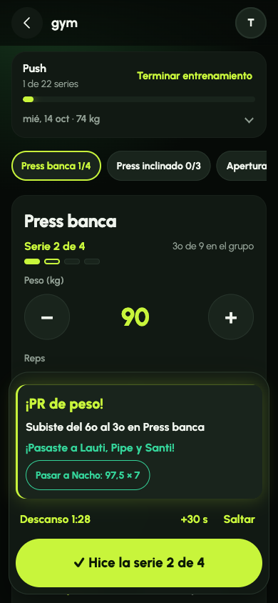
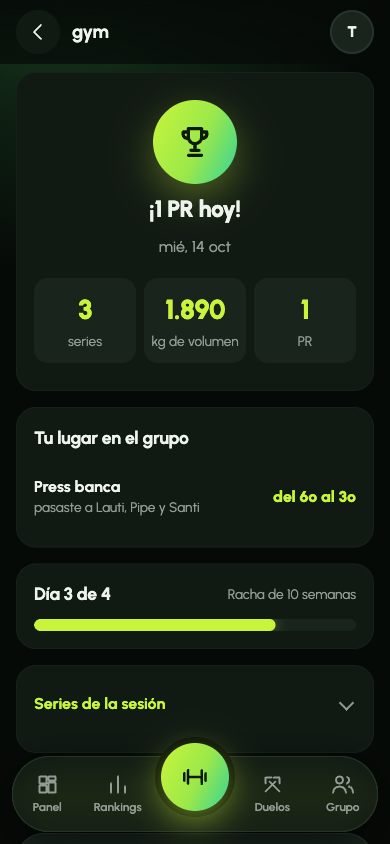
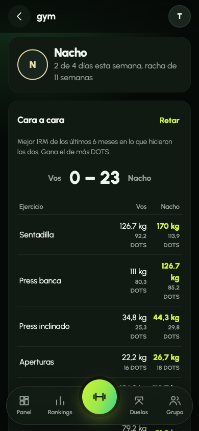
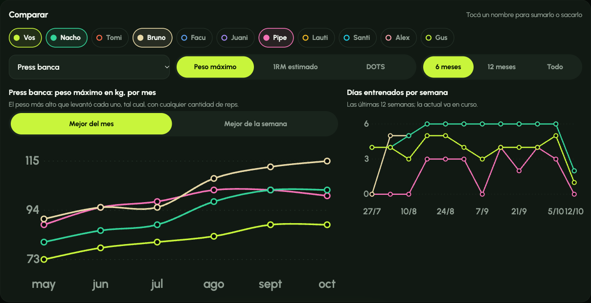

Cada uno con su rutina. Comparados de forma justa.
Alejo García Mata · Gustavo Campero
Presentarnos. En una frase: una app para que un grupo de amigos que va al gimnasio cargue lo que entrena y compita de forma justa. Lo que quiero mostrar no es solo la app, sino cómo la dirigí: qué decidí yo, qué hizo el agente y dónde se equivocó.
El problema
Comparar kilos no sirve: el que pesa 95 siempre gana
Sin la app
Cada uno anota en el celular. La competencia queda en el chat y a ojo.
La idea
Fuerza relativa con DOTS, el coeficiente del powerlifting: ajusta la marca por peso corporal y sexo.
Ejemplo
65 kg que sentadilla 130 → 103 DOTS. 95 kg que sentadilla 170 → 107 DOTS. Dividir por el peso daba al revés.
El dato de por qué DOTS y no el ratio es una decisión mía del repaso del grill: el agente propuso 1RM dividido peso, y eso favorece al liviano porque la fuerza no escala lineal con el peso.
Demo · en el gimnasio

Guardás la serie y ves al instante el PR, a quién pasaste y qué te falta para el siguiente.

El cierre de la sesión: puntaje, lugares que subiste y la semana.

Tocás a un bro: su semana y el cara a cara en DOTS.
Acá paso a la demo en vivo. Guion: entro, Entrenar, toco "Toca hoy", cargo una serie con el chip "PR +peso" (dos toques), muestro la tarjeta y el confeti. Termino y muestro el resumen. Después toco a Nacho en el panel y muestro el cara a cara. Si falla la red, estas capturas son el plan B.
Demo · en casa

El panel del grupo: las curvas de cada uno, en peso máximo, 1RM estimado o DOTS, por mes o por semana.
Mostrar: prender y apagar personas, cambiar a DOTS (ahí cambia quién va ganando), y a semana a semana. Comentar que "peso máximo" lo pedí yo después: el 1RM es calculado y quería ver el peso real.
Especificación
Todo en disco antes de la primera línea de código
Pitch→PRD→Grill de decisiones→Spec→12 issues→PR por issue
El agente pregunta, nosotros decidimos: repasamos cada pregunta y cambiamos lo que no cerraba (DOTS, peso por sesión, progreso, constancia).
El spec manda: si una regla cambia, cambia el spec en el mismo PR.
Cada vuelta nueva (panel, más juego, cuentas) arrancó con otra pasada del grill antes de tocar código.
Los documentos: docs/prd.md, docs/grill.md (con "qué cambió al repasarlo" arriba), docs/spec.md y docs/proceso.md como bitácora. Hubo varias pasadas del grill a lo largo del proyecto.
Arquitectura y contrato
Frontend
HTML, CSS y JS con ES modules. Sin build. Una vista por archivo.
→
API
FastAPI + SQLite. 38 endpoints, un router por recurso. 404 / 403 / 409 / 422 según el caso.
→
backend/stats/
Las reglas, como funciones puras: sin base ni HTTP. Con TDD.
Todo lo derivable se calcula al leer: PRs, rankings y duelos no se guardan. Borrar una sesión no deja nada inconsistente.
Las sesiones son del usuario, no del grupo: lo que entrenás cuenta en todos tus grupos.
El módulo de stats es el módulo profundo: recibe series y una fecha y devuelve tablas. Por eso pude cambiar reglas con test primero sin tocar las rutas. La única excepción a "calcular al leer" es el ganador de una campaña cerrada, que se congela porque es un premio.
Gestión del contexto
El proyecto creció; el agente no se perdió porque las reglas estaban escritas
.claude/ versionado
CLAUDE.md: dónde está el spec y los límites (300 líneas por archivo).
Reglas por path: backend, frontend, tests.
Permisos: push y merge piden ok; .env no se lee.
Herramientas propias
Skill nuevo-ranking: regla del spec → test → función.
Sub-agente gym-bro: prueba la app como usuario.
Cuando algo creció
stats.py y schemas.py pasaron a paquetes.
La pantalla de carga se partió tres veces en vez de subir el límite.
La regla de "no cambies una decisión del grill sin preguntar" en CLAUDE.md funcionó: cuando el gym-bro pidió "PR de reps", el agente no lo cambió solo, me preguntó.
Evidencia en el repo
48PRs, uno por issue o arreglo
31issues, de cortes verticales a devoluciones
18commits de test en rojo antes del código
164tests en verde
Tres semanas, del pitch (22/9) al Demo Day. Branch por cambio, PR que cierra su issue y merge a main.
Si da el tiempo, abrir GitHub y mostrar un PR con su commit de test en rojo y después el de implementación. Por ejemplo el de "posición en vivo".
Deriva del agente · 1
Tres reglas del spec estaban mal, y los tests pasaban
Constancia salía siempre "sin datos": el primer objetivo regía recién desde la semana del registro.
Progreso en 6 meses o "Todo" quedaba vacío: comparaba contra un mes sin datos.
PRs: la primera sesión tiraba cuatro y llenaba el feed.
Las encontró el gym-bro usando la app, no los tests. Un test verde dice que el código cumple la regla, no que la regla sirva.
Los tests verificaban exactamente lo que decía el spec: el error estaba en el spec. Corregí las tres con test primero y lo anoté en el spec. Esta es probablemente la lección más importante del proyecto.
Deriva del agente · 2
Lo que vi yo al usarla
"¿Terminar qué?"
La carga tenía muchos botones, y "Terminar (1)" estaba al lado de "Guardar serie". Rediseño: una sola acción grande por momento, "✓ Hice la serie 2 de 5".
Datos que se duplicaban
Correr dos veces el script de datos de prueba inventaba días nuevos. Restauré el backup y lo hice repetible.
Google en el celular
Auth0 no corre sin HTTPS fuera de localhost. Lo apagué y sumé usuario y contraseña propios, con la contraseña hasheada.
Ninguno de estos lo hubiera detectado un test. El de la UX lo marqué yo con una captura. El del script lo vio el agente al revisar los números (319 sesiones cuando esperaba 100). Lo de Auth0 lo entendí recién cuando quise entrar desde el celular.
Prueba con un agente usuario
El gym-bro: el celular en una mano y el gimnasio lleno
Cómo
Un sub-agente que no lee el código. Carga sesiones con errores a propósito, recarga a mitad de carga y después revisa todo en casa, en el celular y en escritorio.
Tres pasadas
Cada una con su devolución por gravedad, en docs/devolucion-gym-bro.md, y los arreglos en el PR siguiente.
Medido
Toques por serie: 2,6 → 1,8 con "Para PR". Peso de 2260 kg por un campo que no seleccionaba: corregido.
El agente está definido en .claude/agents/gym-bro.md. Lo valioso fue pedirle mediciones concretas (toques, qué leyó dos veces, qué quedó lejos del pulgar) en vez de una opinión general.
Apropiación
Lo puedo explicar, corregir y extender
# PR: contra las sesiones anteriores,
# a lo sumo uno por ejercicio y sesiónif load > best_load: pr = "weight"elif load == best_load: pr = "reps"elif 1rm > best_1rm: pr = "1rm"# 1RM estimado (Epley), hasta 10 reps
1rm = load × (1 + reps / 30)
Ejemplo: "Pasar a Nacho"
Tomo el DOTS de Nacho, lo paso a kilos con tu peso del día y despejo Epley a tus mismas reps. Redondeo hacia arriba a discos de 2,5 kg hasta superarlo.
Está en backend/stats/standing.py, con su test.
Si preguntan por algo puntual, saber explicar: DOTS (polinomio por sexo, peso acotado), la regla de PRs, por qué se calcula al leer, y cómo funciona el token de sesión (se guarda el sha256, no el token).
Qué me llevo
Decidir en el grill
Las mejores decisiones salieron de discutir y corregir lo que el agente proponía, antes de escribir código.
Probar como usuario
Los tests protegen las reglas; un agente usuario (o yo con el celular) encuentra si las reglas sirven.
Escribir los límites
CLAUDE.md, reglas y permisos hicieron que el proyecto creciera sin que el agente se desordenara.
Si hubiera que hacerlo de nuevo: correr el gym-bro antes, apenas hubo una primera versión, en vez de después de los 12 issues.